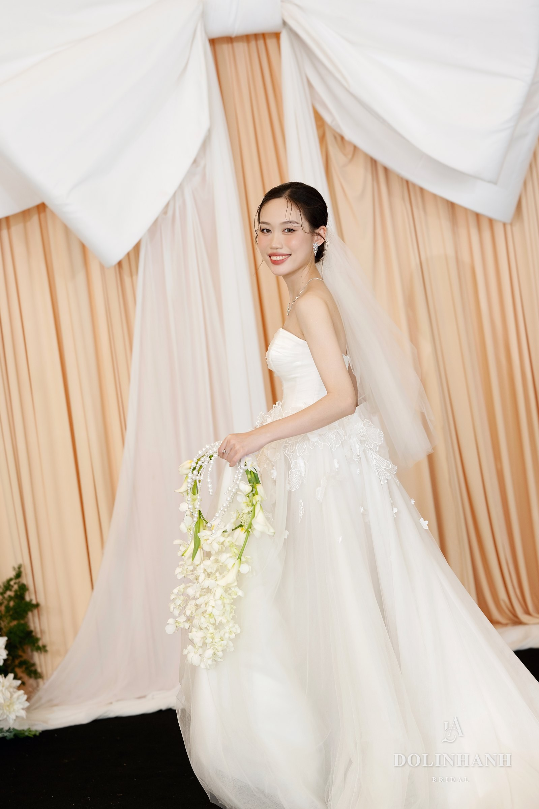
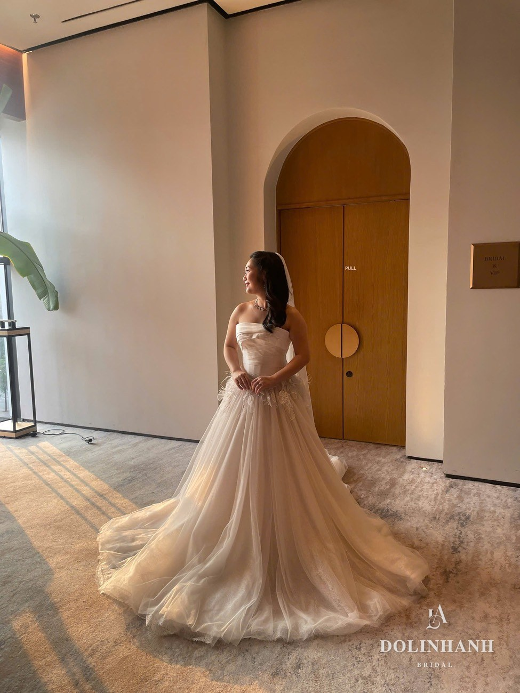
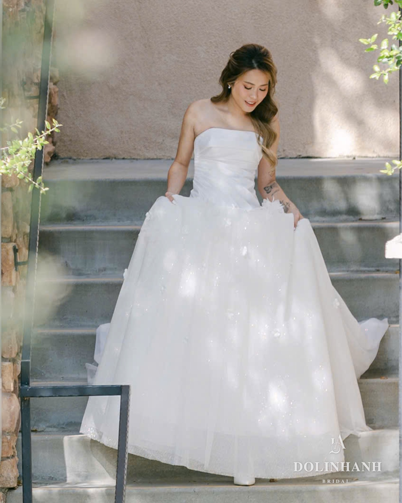

Những cô dâu đã chọn Dolinhanh
Mỗi cô dâu đến với Dolinhanh là một câu chuyện khác nhau. Điểm chung là khi khoác lên chiếc váy của mình, nàng cảm thấy đó là mình.

Ren hoa nổi, tùng xoè — những bông hoa ren trải dọc thân váy, mềm mà vẫn có chiều sâu.
Cô dâu Rey
Váy Dolinhanh Bridal

Tulle mềm, tùng bồng, voan dài — chiếc váy nhẹ, trải theo từng bước chân của nàng.
Cô dâu Hằng
Váy Dolinhanh Bridal

Ballgown organza, hoa vải đính tay — mỗi cánh hoa được đính thủ công theo số đo của nàng.
Cô dâu Wendy
Váy Dolinhanh Bridal

Thân đính kết, choàng voan, tùng nhiều lớp — nàng chọn một chiếc váy lộng lẫy mà vẫn là chính mình.
Cô dâu Nghi Võ
Váy Dolinhanh Bridal
Ảnh cô dâu thật tại Dolinhanh Bridal, đã được các nàng đồng ý cho đăng. Xem thêm cô dâu trên dolinhanhbridal.com →